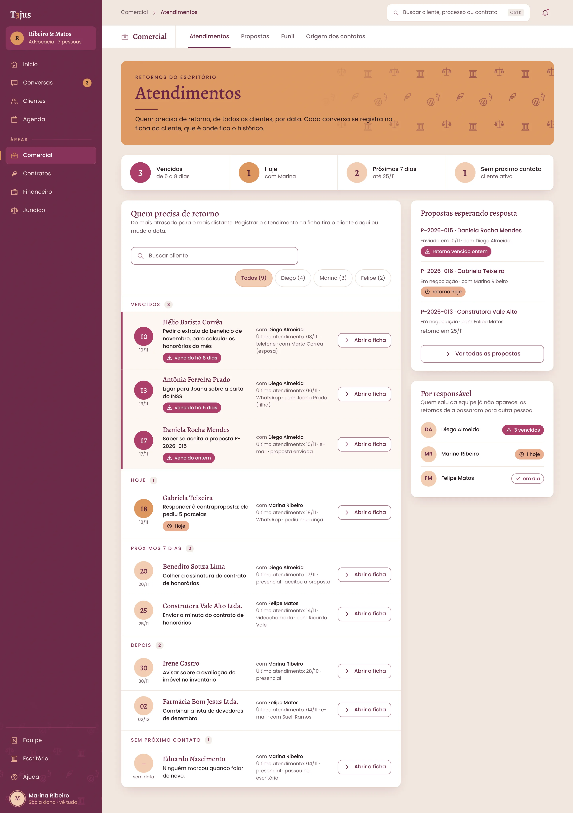

Quem precisa de retorno
Quatro números no alto (vencidos, hoje, 7 dias, sem próximo contato), filtro por responsável e a lista por grupo, do mais atrasado ao mais distante. Cada linha leva à ficha do cliente. Ao lado, as propostas esperando resposta e o retrato por responsável.
Abrir: comercial.html?estado=atendimentos (estreite a janela para ver o celular)